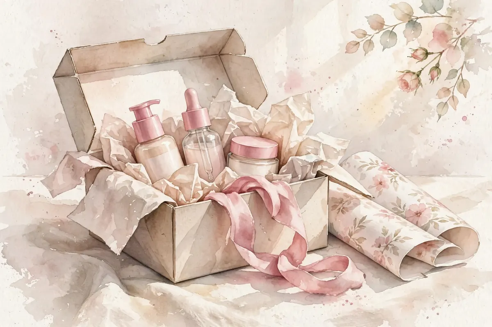
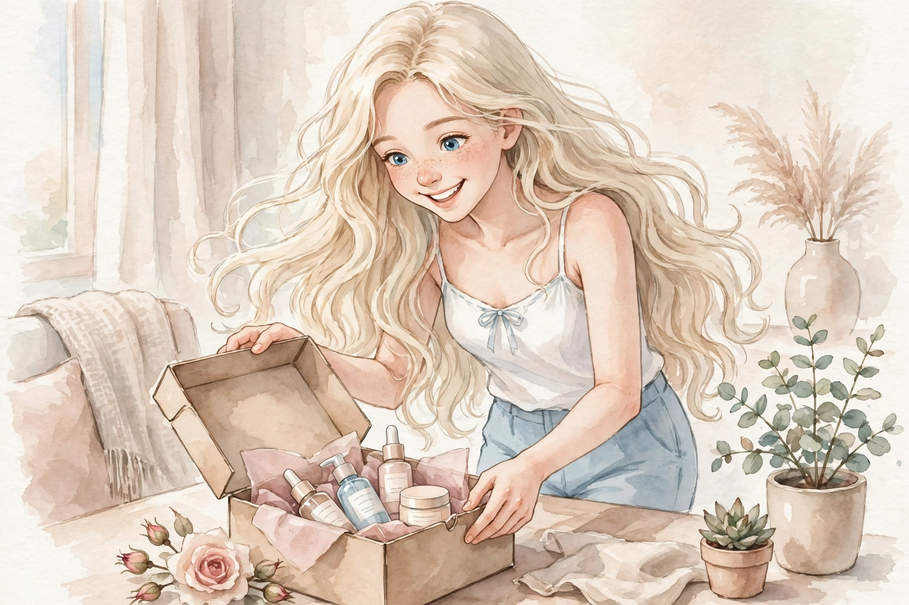

トップ ＞ スキンケア ＞ プレゼントでもらったスキンケアの確認点
プレゼントでもらったスキンケアの確認点

誕生日や記念日に、スキンケアアイテムをいただくことがあります。贈り物は気持ちがうれしい反面、自分の肌や手順に合うかどうかは別問題です。この記事では、いただいたアイテムを使う前に確認したいポイントを整理します。
まず表示で「用途と使い方」を読む
最初に確認するのは、そのアイテムが何のためのものか、です。化粧水、美容液、クリームといった種類だけでなく、顔用か体用か、朝用か夜用か、といった用途の表示を見ます。セット品の場合は、小さい容器同士が見分けにくいこともあるので、使う順番の案内が箱や説明書にないかも確認してください。
次に、自分の今の手順のどこに入るかを見ます。すでに同じ役割のアイテムを使っている場合は、置き換えるのか、交互に使うのかを決めてから開封するのがおすすめです。開封は、使う計画が立ってからで構いません。
開封状態と保管のされ方も確認
未開封かどうか、容器に傷みがないかも見ておきます。長く自宅で保管されていたものをいただくこともありますから、香りや色に違和感がないかは、開封時の確認ポイントです。気になる点がある場合は、無理に顔には使わない判断も大切です。
使い始めるときは、新しいアイテムを足すときの基本と同じで、少量から試す進め方が穏やかです。贈り物だからと無理に使い切る必要はありません。
合わなかったときの行き先
顔には合わなかったけれど状態に問題がないものは、体用に回す、家族と相談して使ってもらう、といった行き先があります。未開封のままなら、保管の条件を守って、使う予定のある時期まで取っておく方法もあります。
贈ってくれた方への感謝と、自分の肌への正直さは、別の話として両立できます。使った感想を伝えるときも、「香りが好みだった」「パッケージがきれいだった」など、伝えられる部分はたくさんあります。確認点を押さえたうえで、贈り物を楽しんでください。
セット品は、開封の順番も考える
複数がセットになった贈り物は、全部を一度に開封する必要はありません。化粧水、美容液、クリームといった役割ごとに、今の手順のものを使い切るタイミングに合わせて、1つずつ開封していく方法があります。開封日を書く習慣と組み合わせると、どれがいつからなのかも管理できます。
セットには、使う順番を示した案内が付いていることも多いです。その案内は、贈り物の設計そのものです。まず案内を読んでから、自分の手順と照らし合わせる。この読み合わせの時間が、いただきものを上手に使う土台になります。贈り物は、読むところから始まります。
いただいたアイテムの情報を調べるときは、メーカーの公式案内が確実です。使い方や使用期限の考え方など、正確な情報は公式の情報源で確認してください。贈り物は、多くの場合、相手が選ぶ過程で公式の情報を読んでいます。その情報の読み合わせが、使い始める前の安心につながります。
使い切ったあとの容器を、旅行用の小分けに再利用する方もいます。その場合は、中身の名前を書き直すことを忘れないでください。確認の習慣は、贈り物を使い切ったあとの場面でも役立ちます。
いただいたアイテムを使い始める日は、開封日の記録と一緒に「いただきもの」と添えておくと、後で見返したときに経緯が分かります。使い心地のメモを一言残しておけば、贈ってくれた方への感想を伝えるときの材料にもなります。記録は、コミュニケーションの助けにもなるのです。
香りのあるアイテムは、好みが分かれるものです。香りが合わない場合は、無理に顔に使わず、ハンド用やボディ用として楽しむ道もあります。贈り物の楽しみ方は、用途を固定しない柔軟さの中にあります。
確認点を押さえることは、贈り物への敬意でもあります。きちんと読んで、きちんと使う。その姿勢が、気持ちに応えることにつながると感じています。

セラフィナ「もらったものこそ、表示から読んでみるんだね。気持ちと確認は両立だよ」

セラフィナ｜美容の道具箱の案内役
「量と表示が分かれば、美容は失敗しない。」——セラフィナと白猫のモコが、買う前のチェックポイントを案内します。綺麗になりたい気持ちに正直に、でも表示は冷静に読むのが、このサイトの約束です。